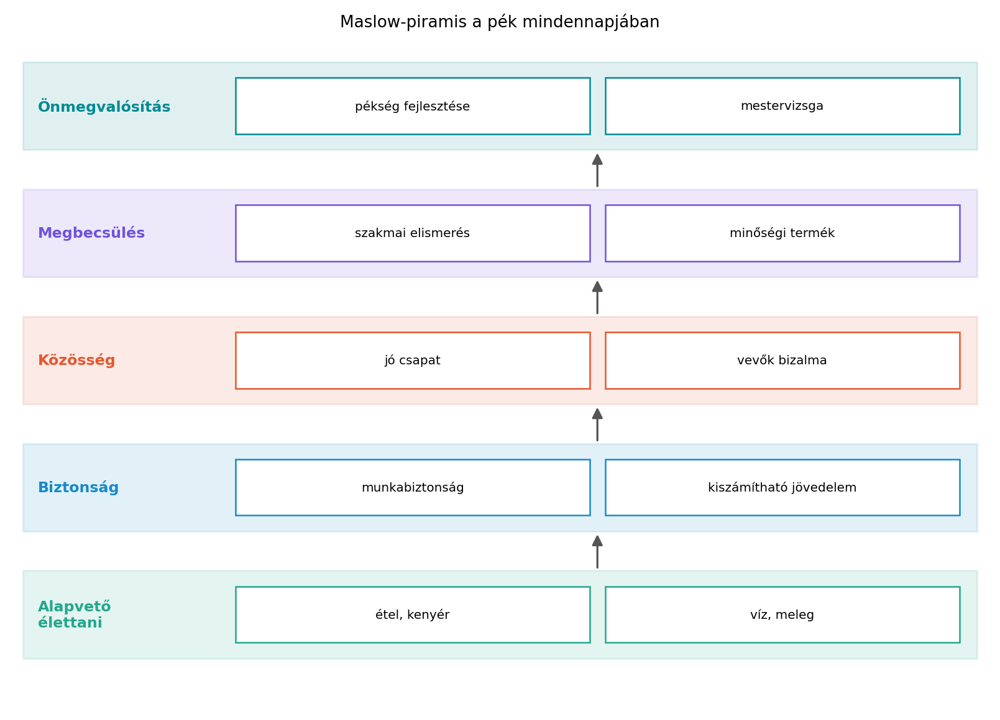
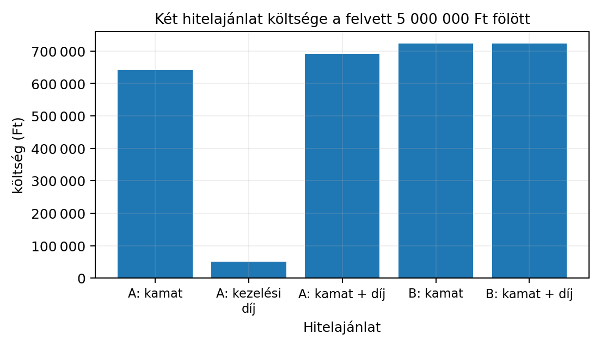

A pékségben a szakmai tudás és a gazdálkodási tudás nem válik el egymástól. Ha a pék hibásan méri fel, hogy mennyi lisztre, energiára, munkaerőre vagy hitelre van szüksége, akkor hiába jó a technológiája: a liszt elfogy, a kemence nem készül el, vagy a havi törlesztő elviszi a vállalkozás nyereségét. Ebben az alfejezetben azokat az alapfogalmakat tanulod meg, amelyekre az önköltségszámítás és a vállalkozási döntések épülnek.
Egy vevő hajnalban friss kenyeret szeretne venni. Ez nem csak vásárlási szokás: az embernek szükséglete van az élelemre, a biztonságra, a közösséghez tartozásra. A pék munkáját is szükségletek mozgatják: jövedelemre, biztonságos munkahelyre, szakmai elismerésre vagy saját műhely fejlesztésére lehet szüksége.
Definíció. A szükséglet olyan hiányérzet, amelyet az ember cselekvéssel akar megszüntetni; a szükséglet a gazdasági döntések egyik mozgatója.
Abraham Maslow elmélete szerint a szükségletek rétegekbe rendezhetők, és jellemzően alulról felfelé haladva hatnak. A pékségben ez úgy jelenik meg, hogy a munkavállaló előbb a biztonságos jövedelmet és a munkahelyi feltételeket értékeli, azután a csapathoz tartozást, a szakmai megbecsülést, majd az önmegvalósítást, például a vizsgára készülést vagy a mestervizsgát.

Egy termék akkor értékesíthető jól, ha a vevő valamelyik szükségletét valóságosan kielégíti. A kenyér fiziológiai szükségletet elégít ki, a megbízható minőség pedig a biztonság iránti szükségletet.
A pék minden nap gazdasági javakkal dolgozik: lisztet, élesztőt, vizet, energiát, gépeket és munkaidőt használ fel.
Definíció. Gazdasági jószág minden olyan dolog vagy szolgáltatás, amely az emberi szükségletek kielégítésére alkalmas, de a rendelkezésre álló mennyisége korlátozott, ezért gazdálkodni kell vele. Szabad jószág az, amely általában korlátlanul rendelkezésre áll, ilyen a pékségben a beszívott levegő; a sűrített levegő viszont már energia- és gépköltséggel előállított gazdasági jószág.
A termelés az a folyamat, amelyben a pékség erőforrásokat alakít át kenyérré, péksüteménnyé vagy más termékké. Ehhez négy alapvető termelési tényezőt használunk:
| Termelési tényező | Példa a pékségben | Miért fontos? |
|---|---|---|
| Munka | pék, eladó, karbantartó, szállító | szakértelem, idő, fizikai és szellemi munka |
| Tőke | kemence, dagasztógép, hűtő; forgóeszközként a liszt, élesztő, csomagolóanyag; pénz | eszköz és finanszírozás a termeléshez |
| Természeti erőforrás | víz, földgáz, termőföld (a gabona forrása) | anyag és energiabevitel |
| Vállalkozói tevékenység | tulajdonosi döntés, kockázatvállalás, szervezés | a tényezők összefogása, piacra vitel |
Példa. Ha egy pékség reggel 300 darab zsemlét akar sütni, akkor munka kell a dagasztáshoz és formázáshoz, tőke a dagasztógépben, a kemencében és a liszt-készletben, természeti erőforrás a vízben és a földgázban, valamint vállalkozói döntés arról, hogy milyen terméket, mennyiért és mikor készítsen.
A gazdálkodás alapszabálya, hogy a szűkösen rendelkezésre álló erőforrásokkal ésszerűen bánjunk. Ez nem spórolást jelent mindenáron, hanem a ráfordítás és az eredmény tudatos összevetését.
Definíció. A takarékosság elve azt mondja ki, hogy adott eredményt a lehető legkisebb ráfordítással, vagy adott ráfordítással a lehető legnagyobb eredményt érjük el – anélkül, hogy a termékbiztonságot, a jogszabályi követelményeket vagy a dolgozók egészségét veszélyeztetnénk.
A pékségben takarékos megoldás például a lisztveszteség csökkentése, a kemence üresjáratának rövidítése, a hűtő ajtajának tudatos nyitása-zárása, a rendeléshez igazított tételnagyság. Ugyanakkor tilos takarékosságból elhagyni a kézmosást, a fertőtlenítést, a gépburkolatot, a hőmérséklet-ellenőrzést vagy a selejt kiselejtezését.
Számítás. Egy pékség naponta 400 kg lisztet dolgoz fel. A belső lisztveszteség jelenleg 2%, de jobb munkaszervezéssel 1,5%-ra csökkenthető. A liszt beszerzési ára a példában 180 Ft/kg. Mennyi a napi és az éves megtakarítás, ha évente 300 termelési napot számolunk?
A veszteségcsökkenés lisztben:
A napi megtakarítás:
Az éves megtakarítás:
Ez a példa azt mutatja, hogy egy látszólag kis veszteségcsökkenés is érzékelhető éves költségmegtakarítást adhat. A számítás tanulási példa; a valódi lisztár, a veszteségmérés és a termelési napok száma üzemenként eltér.
Figyelem. A takarékosság nem azonos a minőségrontással. Ha olcsóbb, de nem megfelelő lisztet vásárol a pék, akkor a közvetlen anyagköltség csökkenhet, de a selejt, a vevői reklamáció és az élelmiszer-biztonsági kockázat miatt a teljes költség nőhet.
Egy pékség fejlesztése sokszor meghaladja a napi bevételekből képződő saját forrást. Ilyenkor idegen forrásra, leggyakrabban hitelre lehet szükség.
Definíció. A hitel olyan pénzügyi szolgáltatás, amelyben a hitelező – rendszerint bank vagy más hitelintézet – pénzt bocsát az adós rendelkezésére, az adós pedig a szerződés szerinti időpontokban visszafizeti a hitelösszeget, valamint kamatot és díjakat fizet.
A hitel nem „ingyen pénz”: a pénz használatának ára van. A visszafizetett teljes összeg mindig több, mint a felvett hitelösszeg, hacsak nincs külön támogatás vagy kamatmentesség. A különbséget a kamat és a kezelési költség, díj, biztosítás okozza.
A pék szempontjából a hitel célja szerint lehet például:
Definíció. A hitelképesség azt fejezi ki, hogy az adós a jövedelme és vagyoni helyzete alapján várhatóan képes-e a hitelt visszafizetni. A hitelképesség vizsgálata során a bank a rendszeres jövedelmet, a meglévő kiadásokat, a korábbi tartozásokat, a saját erőt és a tevékenység stabilitását nézi.
A fedezet olyan vagyon vagy kötelezettségvállalás, amely a hitel vissza nem fizetése esetén csökkenti a hitelező veszteségét. Fedezet lehet például:
Előírás. A hitelnyújtás feltételeit, a bankok működését és a fogyasztóknak nyújtott hitelek tájékoztatási szabályait magyar és európai uniós jogszabályok rendezik. A hitelek összehasonlítására a teljes hiteldíj mutató (THM) szolgál; a THM a kamaton kívül a főbb díjakat is egységesítve, százalékos formában mutatja. A THM pontos számítási módját és az aktuális hatályos előírásokat a banki tájékoztató és a hatályos jogszabály szerint kell ellenőrizni (ellenőrizendő: a hitelintézetekre és a fogyasztói hitelekre vonatkozó aktuális magyar szabályozás, a banki tájékoztató).
Számítás. Egy pékség 5 000 000 Ft hitelt szeretne felvenni 3 éves futamidőre. Az A ajánlat éves ügyleti kamata 8%, és egyszeri 50 000 Ft kezelési költséggel jár. A B ajánlat éves kamata 9%, és nincs külön kezelési költség. Hasonlítsd össze a havi törlesztőrészletet és a teljes visszafizetést, ha a törlesztés havonta egyenlő részletű, annuitásos hitel.
A havi törlesztőrészlet képlete, ha a kamatláb havonta egyenlő:
ahol a hitelösszeg, a havi kamatláb, a futamidő hónapokban.
Az A ajánlatnál:
A teljes visszafizetés az A ajánlatnál:
A B ajánlatnál:
A teljes visszafizetés a B ajánlatnál:

Az oszlopok nem a teljes visszafizetést, hanem a felvett összeg fölötti költséget mutatják, mert a közös 5 000 000 Ft mellett a két ajánlat különbsége nem látszana. A leegyszerűsített példában az A ajánlat teljes visszafizetése mintegy 33 410 Ft-tal kisebb (az alacsonyabb kamat bőven ellensúlyozza az 50 000 Ft-os kezelési költséget), ezért ez tűnik kedvezőbbnek. A valóságban a THM és a további feltételek – például előtörlesztés, kamatperiódus, árfolyamkockázat – együtt döntenek. A számítás tanulási példa; a banki kalkulációt az adott hitelajánlat szerint kell elvégezni.
Egy kis pékség új gázsütő kemencét szeretne vásárolni. A tulajdonos két hitelajánlatot kér. Az egyik alacsonyabb havi törlesztőt mutat, de hosszabb futamidővel; a másik magasabb törlesztőt, de rövidebb futamidővel. A pék a teljes visszafizetést számolja ki, nem csak a havi részletet, így látja, hogy a hosszabb futamidő növeli a teljes kamatköltséget. Ezt összeveti a kemence várható megtakarításával, és csak akkor vállal hitelt, ha a havi törlesztő a meglévő pénzforgalom mellett is kényelmesen kigazdálkodható.
Egy gazdálkodási döntés akkor jó, ha:
A szükséglet és a vágy összekeverése. A pék a legújabb, sok funkciós kemencét veszi meg, pedig a termeléshez elegendő lenne egy kisebb, olcsóbb is. Megoldás: előbb a termelési terv, utána a beruházási döntés.
A takarékosságot a higiéniai és biztonsági kiadások megvonásával keveri. A kézmosószert, a fertőtlenítést vagy a gépkarbantartást csökkenti. Megoldás: csak a veszteséget csökkentő, de a termékbiztonságot nem érintő megtakarítást szabad bevezetni.
Csak a havi törlesztőt nézi, a THM-et nem. Így két hitel valódi költsége félrevezethető lehet. Megoldás: a teljes visszafizetést és a THM-et együtt kell vizsgálni.
Fedezet nélkül, túlzott hitelt vesz fel. Ha a bevétel átmenetileg csökken, a hitel azonnal válságot okoz. Megoldás: a hitel törlesztője mellett tartalékot is kell képezni, és a hitelt a reális pénzforgalomhoz kell igazítani.
1. feladat (A)
Fogalmazd meg, mi a különbség a szabad jószág és a gazdasági jószág
között. Adj pékségi példát.
2. feladat (A)
Sorold fel a Maslow-piramis szintjeit alulról felfelé, és írd mellé,
hogyan jelenhet meg egy pék esetében.
3. feladat (B)
Csoportosítsd a következőket a négy termelési tényező szerint:
szállítómunkás, földgáz, kelesztőkamra, tulajdonosi piaci
kockázatvállalás, kenyérliszt, pékmester munkája, hűtőkamra, víz.
4. feladat (B)
Egy pékség napi 500 kg tésztát gyárt. A selejtarány 4%-ról 3%-ra csökken
jó gyártási gyakorlattal. A tésztába beépülő anyagköltség a példában 320
Ft/kg. Számítsd ki a napi és az éves megtakarítást 250 termelési
nappal.
5. feladat (C)
Egy pékség 6 000 000 Ft hitelt szeretne felvenni 4 éves futamidőre. Az A
ajánlat éves kamata 7,5%, és egyszeri 80 000 Ft díjat tartalmaz; a B
ajánlat éves kamata 8,0%, és nincs külön díj. A törlesztés havonta
egyenlő részletű. Számítsd ki mindkét ajánlat havi törlesztőjét és
teljes visszafizetését, és mondd meg, melyik tűnik kedvezőbbnek! Miért
nem elég ez a döntéshez a THM ismerete nélkül?
6. feladat (D)
Egy pék azt mondja: „Úgy takarékoskodom, hogy a használt sütőlemezt
ritkábban cserélem, a kézfertőtlenítőszert vízzel hígítom, és leállítom
a hűtő hőmérséklet-ellenőrzését, mert az időpocsékolás.” Elemezd, miért
veszélyes ez a döntés, és mit javasolnál a valódi takarékosságra.
1. feladat (A)
A szabad jószág általában korlátlanul rendelkezésre áll, például a
beszívott levegő. A gazdasági jószág szűkösen áll rendelkezésre, ára
van, ezért gazdálkodni kell vele, például a liszt vagy a földgáz.
2. feladat (A)
Alulról felfelé: élettani szükséglet – rendszeres étel, víz; biztonság –
munkahelyi biztonság, kiszámítható jövedelem; közösség – jó munkacsapat,
vevői bizalom; megbecsülés – szakmai elismerés; önmegvalósítás –
mestervizsga, saját pékség fejlesztése.
3. feladat (B)
Munka: szállítómunkás, pékmester munkája. Tőke: kelesztőkamra,
hűtőkamra, valamint a kenyérliszt mint forgóeszköz (feldolgozott,
megvásárolt alapanyag). Természeti erőforrás: földgáz, víz. Vállalkozói
tevékenység: tulajdonosi piaci kockázatvállalás.
4. feladat (B)
A selejtcsökkenés:
.
Napi megtakarítás:
.
Éves megtakarítás:
.
Ez tanulási példa, a valódi anyagköltség eltérhet.
5. feladat (C)
A havi kamatlábak: A-nál
,
B-nél
.
A futamidő
hónap.
A ajánlat:
A teljes visszafizetés:
B ajánlat:
A teljes visszafizetés:
A B ajánlat teljes visszafizetése mintegy 12 400–12 600 Ft-tal kisebb (a kerekítéstől függően), ezért ebben a tanulási példában a B ajánlat tűnik kedvezőbbnek. A havi törlesztő viszont a B ajánlatnál kb. 1 400 Ft-tal magasabb. A valós döntéshez a THM és a szerződési feltételek pontos ismerete szükséges.
6. feladat (D)
A felsorolt „takarékossági” lépések élelmiszer-biztonsági és minőségi
kockázatot növelnek. A sütőlemez elhasználódása idegenanyag-leválást
vagy egyenetlen sütést okozhat. A kézfertőtlenítőszer hígítása rontja a
mikrobacsökkentő hatást, ez keresztfertőzést okozhat. A hűtő
hőmérséklet-ellenőrzésének elhagyása miatt a romlandó anyagok
hőmérséklete ellenőrizetlen marad, ami mikrobiológiai veszélyt jelent.
Valódi takarékosság lehet a lisztveszteség mérése és csökkentése, a
kemence üresjáratának rövidítése, a termelés rendeléshez igazítása,
valamint a gépkarbantartás ütemezése.
A gazdálkodás alapja a szükségletek felismerése és a szűkösen rendelkezésre álló erőforrások ésszerű elosztása. A Maslow-piramis segít megérteni, hogy a vevő és a munkavállaló döntéseit különböző szükségletek mozgatják. A gazdasági javak korlátozottak, ezért gazdálkodni kell velük; a termeléshez négy termelési tényezőt használunk: munka, tőke, természeti erőforrás és vállalkozói tevékenység. A takarékosság elve a ráfordítás és az eredmény tudatos összevetését jelenti, de nem járhat a termékbiztonság, a higiénia vagy a munkabiztonság csökkentésével. A hitel idegen forrás, amelynek ára van; a hitelképesség a visszafizetési képességet mutatja, a fedezet pedig a hitelező kockázatát csökkenti. A hitelajánlatokat a havi törlesztőrészlet mellett a THM és a teljes visszafizetés alapján kell összehasonlítani. Továbbvitt eredmény. A termelési tényezők és a takarékosság fogalma az anyag- és költségszámításhoz szükséges a Sütőipari termékek önköltség- és árszámítása alfejezetben; a tőkeszükséglet, a hitel és a gazdálkodási döntés a Vállalkozási formák, adózás, mérleg és eredménykimutatás alfejezetben tér vissza.